kali linux下PM3环境配置
本文所述的一切技术仅供网络安全研究学习之用，请勿用于任何的违法用途，否则由此所产生的一切后果自负！
前段时间入手了proxmark3 rdv4，好像目前还是最新版本，不过听说马上又要有新版本了(2024更新：4.1早就出了，听说又有新版本了)，这次买的是官方标配加蓝牙拓展模块
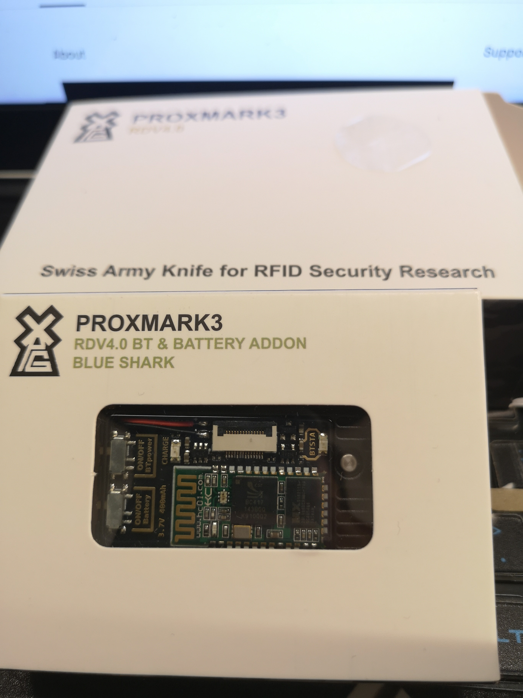
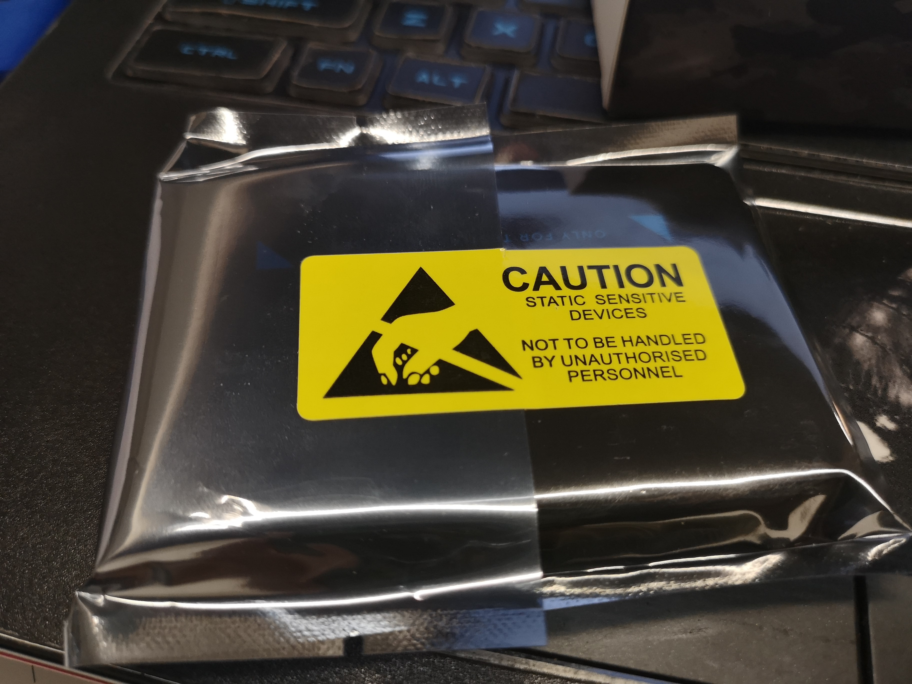
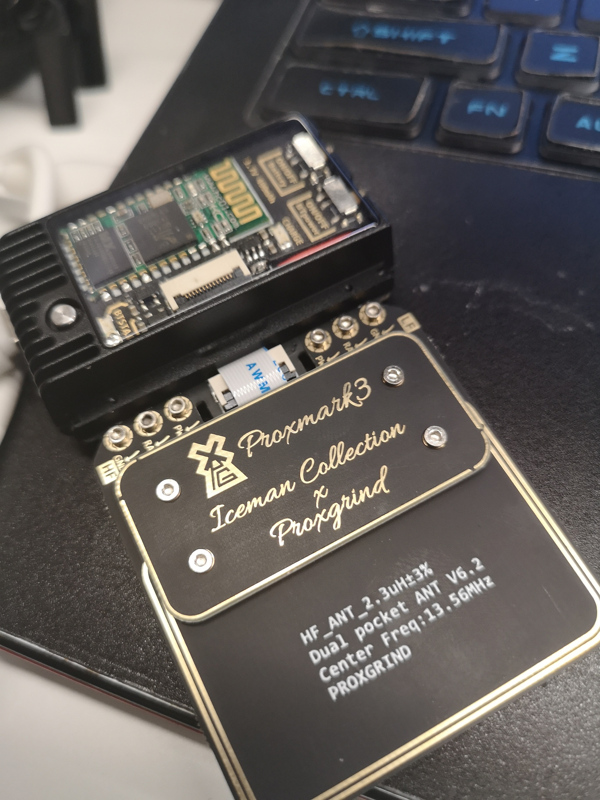
看起来研制还阔以，迫不及待开始搭环境准备下手
首先看到了官方文档的官方wiki
直接在kali上开搞，毕竟kali也是常用系统么
根据官网指示首先输入如下命令安装相关依赖
sudo apt install git build-essential libreadline5 libreadline-dev gcc-arm-none-eabi libusb-0.1-4 libusb-dev libqt4-dev ncurses-dev perl pkg-config libpcsclite-dev pcscd
然后再git clone下来以后开始编译，成功后如图所示：
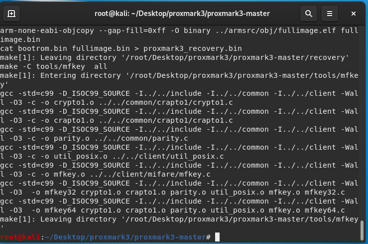
之后将PM3连接到kali中，我的就是这样的，连到了虚拟机，希望不要出什么岔子，我可不希望几千块买的东西变砖
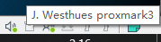
我们继续跟着教程走，输入 dmesg | grep -i usb
我的出现了一大串…
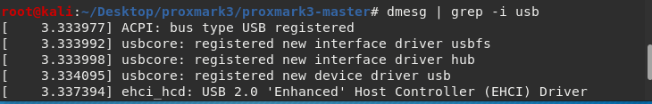
根据提到的关键字检索后发现如下
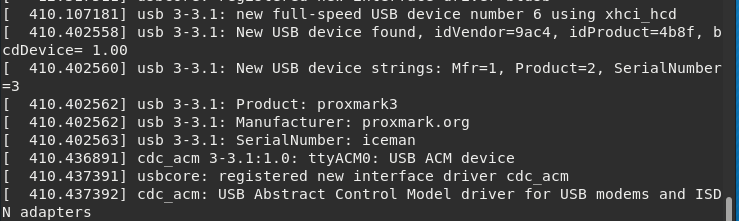
此时根据教程提示我们跳到下一步

然后通过以下命令进行固件升级操作
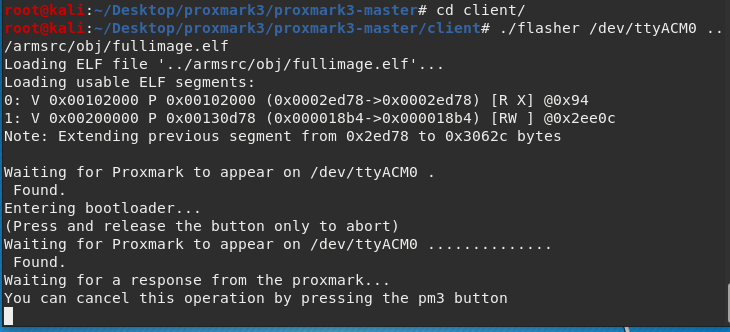
这时候我们来执行命令看看PM3是否正常了
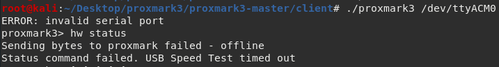
惊了，居然报错了，那问题是什么呢，报的是不正确的端口，通过之前的dmesg | grep -i usb命令再来看一下，原来端口变了…以前在windows上玩盗版PM3也遇到过，插拔以后COM号会加1
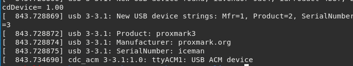
那让我们重新输一次命令OK了！
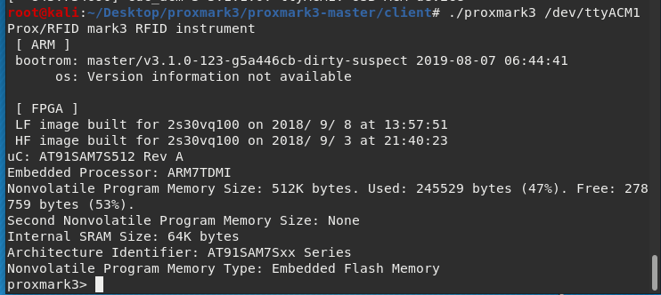
完美！！！
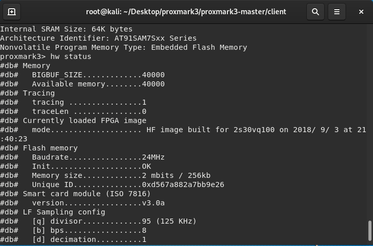
也就是说到此时我们kali Linux上的PM3环境已经完全配置完成了，之后就可以开始搞事情了哈哈哈哈
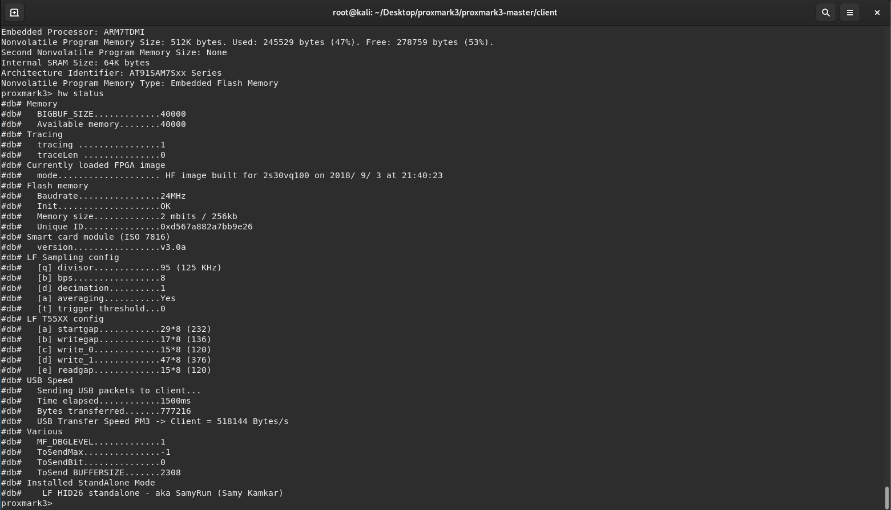
成功把自己差点变砖的PM3rdv4给救了回来，我TM真是个天才！！！
让我们来看看读卡效果，
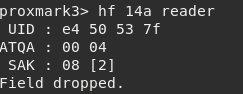
读卡也读到了，简直完美！入门环境搭建教程就到这边，后续会根据实际情况写一些其他的教程。（其实这是一次救砖教程，之前因为一番神奇的操作导致我的PM3变砖，想想这400美刀买回来的东西就这么变砖了是真的难受！还好又在一番神器的操作下救了回来，果然电子产品出问题解决问题三部曲：重启重装重买）